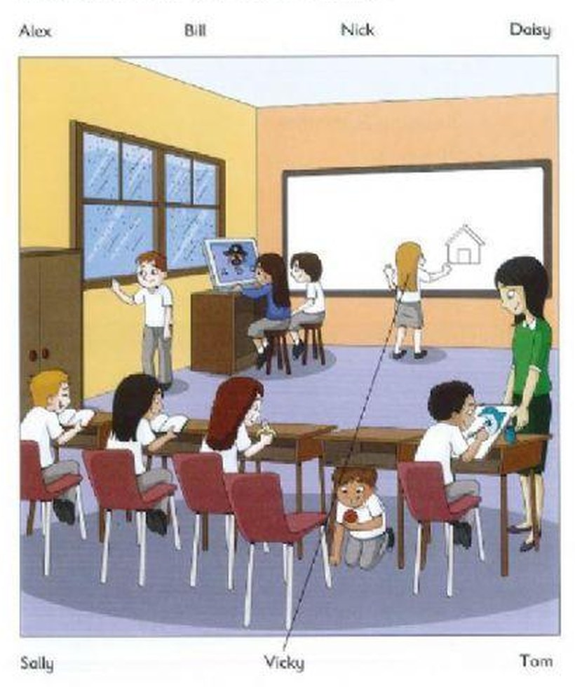
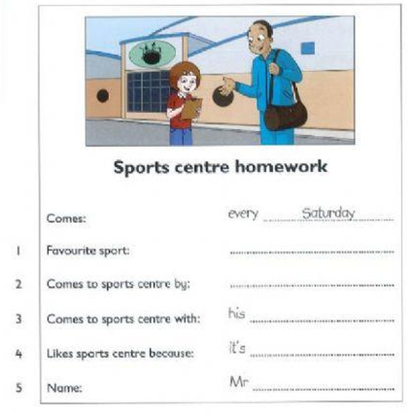
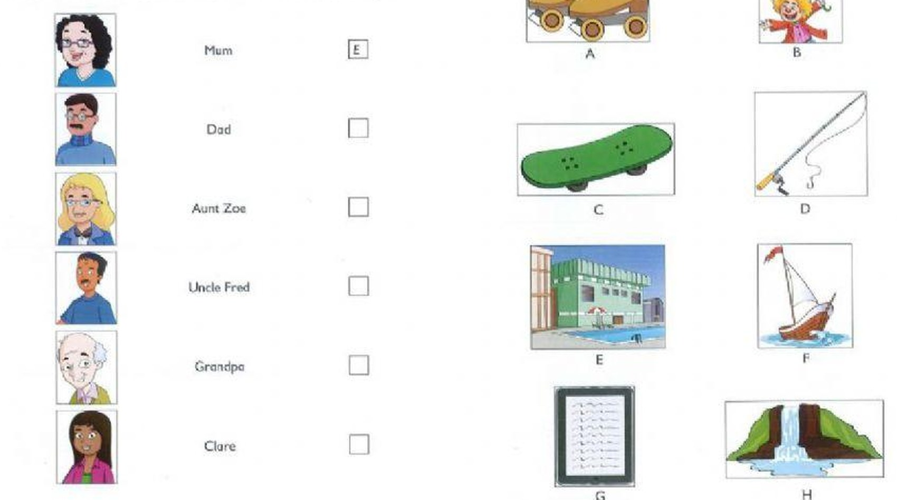
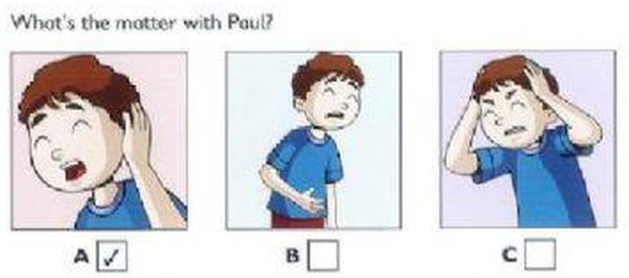
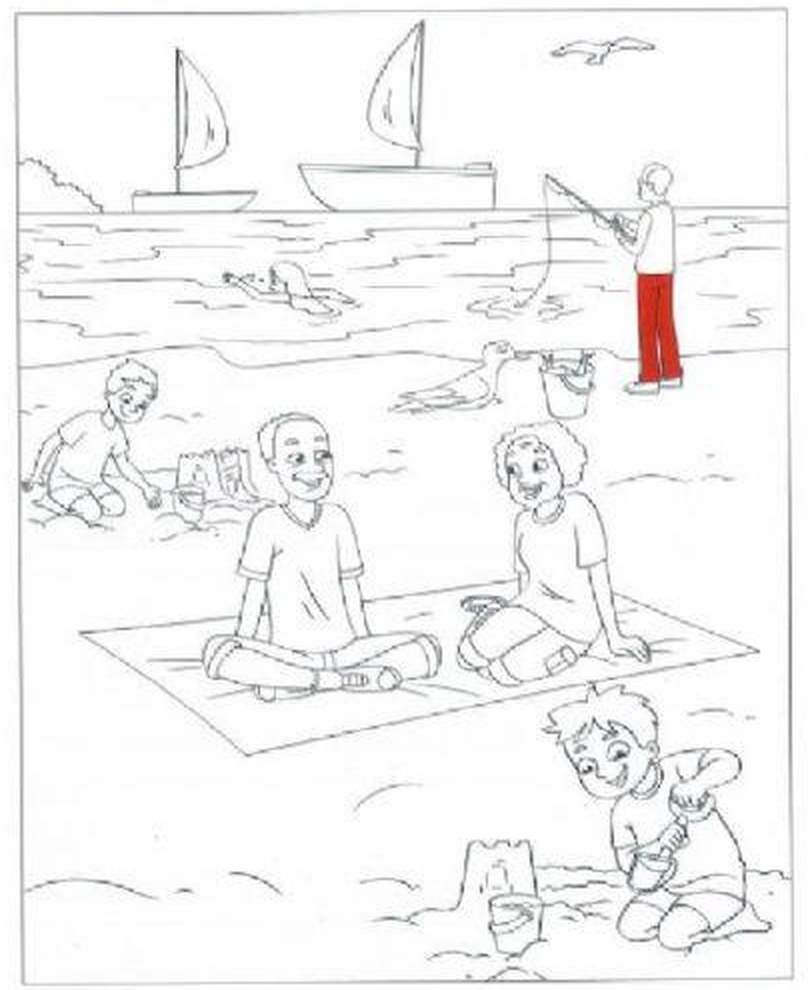

Práctica de escucha en inglés. 5 partes, 5 preguntas en cada una.
Listen and draw lines. There is one example.
Escucha y une con una línea cada nombre con la persona del dibujo, como en el examen. Toca un nombre y luego toca a la persona. Para cambiar una línea, toca otra vez el nombre. Ejemplo: Vicky es la niña que dibuja la casa en la pizarra. Un nombre sobra y algunas personas quedan sin nombre.

Toca un nombre para empezar.
Listen and write. There is one example.
Escucha y escribe la palabra que falta. Ejemplo: Comes: every Saturday.

Julia is telling her teacher about her family's weekend. What did each person do? Listen and write a letter in each box. There is one example.
Escucha qué hizo cada persona el fin de semana y elige la letra del dibujo. Ejemplo: Mum fue a la piscina (E).

Listen and tick the box. There is one example.
Escucha y elige el dibujo correcto: A, B o C. El ejemplo ya está hecho.

Ejemplo: la respuesta es A (a Paul le duele el oído).
Listen and colour and write. There is one example.
Escucha. Elige un color y toca la parte del dibujo que dicen para pintarla. Ejemplo: el pantalón del señor que pesca es rojo. Para la palabra, escríbela abajo y elige el barco.
Si te equivocas de color, elige otro y vuelve a tocar, o usa "Borrar".

Al terminar todo, sube a ver el puntaje total y toma la captura.